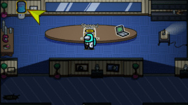
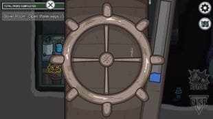
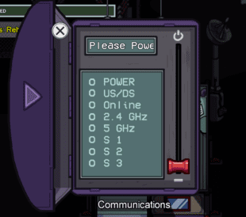
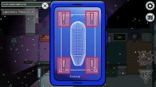
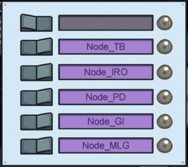
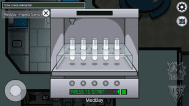
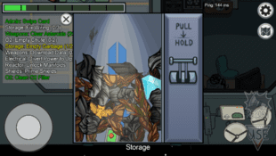
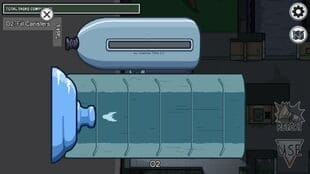
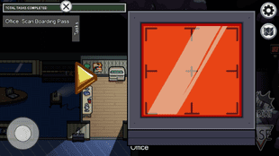
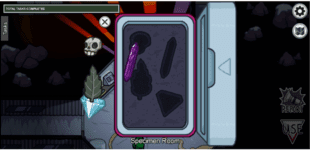

Task Tester 2000 - Polus
Boiler Room
Communications
Dropship
Electrical
Laboratory
Medbay
O2
Office
Outside
Specimen Room
Storage
Weapons
Boilerroom
Long Task
Replace Water Jug
You have to replace the water bottle in the Office, but you have to first fill the water bottle from the Boiler Room, and then take it to the Office.
Open Waterway
This task requires you to open the valves for the Waterways. Turn the two valves in this area until you see the water indicator rise to full.
Communications
Long Task
Reboot Wifi
All you have to do is to power off the router, wait for 60 seconds and then turn it back on to reset it.
Upload Data

The crewmate must Upload Data, which also takes 8.7 seconds.
Dropship
Short Task
Chart Course

You just have to drag the ship on the dotted lines.
Common Task
Insert Keys
This is a simple task where you have to insert a key in the highlighted lock, and then turn it around to complete it
Electrical
Common Task
Fix Wiring

You will find four disconnected wires with different colors. Match the colors and join the wires to fix them.
Long Task
Download Data

Simple download the data in the room, and then go to Communications to upload the data.
Laboratory
Short Task
Record Temperature
Requires you to use the arrows to adjust the numbers and match them to the ones on the right.
Repair Drill
Click the exclamation alerts three to four times to remove the errors.
Align Telescope
Drag the telescope towards the element to focus the picture
Common Task
Fix Wiring
Fix Wiring is done by connecting each colored wire from the left-hand side of the screen to the right-hand side, making sure each color matches on both sides.
Long Task
Fix Weather Node
Once the end of the maze is reached, the player must go to the Laboratory and switch on the weather node that was fixed.
Medbay
Long Task
Submit Scan

A simple scanner task where allow the device to scan your full body.
Inspect Sample
You have to click on the green button and wait for a minute and a half. When the sample changes color, click on it.
O2
Short Task
Empty Garbage
Pull the lever down to let all the garbage flow out and discard.
Upload Data
Upload in Communications
Monitor Tree
You will find four sliders here for different materials. Simply drag the slide level to the highlighted lines
Fill Canisters
bring the oxygen and then place it on the tray to fill up the canisters.. Do this twice to complete this task.
Common Task
Fix Wiring
Fix Wiring is done by connecting each colored wire from the left-hand side of the screen to the right-hand side, making sure each color matches on both sides. Three electrical panels must be repaired for this task to be completed.
Office
Common Task
Scan Boarding Pass
Open your boarding pass with the yellow arrows, switch it to face the scanner and then drag it on the red scanner area.
Swipe Card

Use your keycard and simple swipe from left to right on the card reader.
Fix Wiring
Use the console on the left and begin the task. It will take a long time, almost a minute, for this to go through. You can leave the terminal and come back, but the task will not register as complete until you select it one final time to choose the anomaly.
Long Task
Download Data
Download the data and then upload it in Communications
Replace Water Jug
To complete this task, the player must go to the office and fill up a water jug by holding down the button until all of the water is transferred from the jug's right side to the left.
Outside
Short Task
Record Temperature
Requires you to use the arrows to adjust the numbers and match them to the ones on the right.
Long Task
Fix Weather Node
This is a simple task where you have to drag the node through the maze to the other end.
Specimen Room
Short Task
Store Artifacts
Simply place the artifacts in their places in the case.
Unlock Manifolds

Click the numbers from 1-10 in ascending order.
Long Task
Start Reactor

A simple task that requires you to press the buttons with the same pattern shown on the left.
Upload Data
Download the data.
Storage
Long Task
Fuel Engines

Fill the empty fuel canister in the Storage Room and take it to the engine on the right. Now repeat the step for the left engine.
Weapons
Long Task
Clear Asteroids

Simple click on the asteroids that come from the right to destroy them.
Upload Data
Download the data